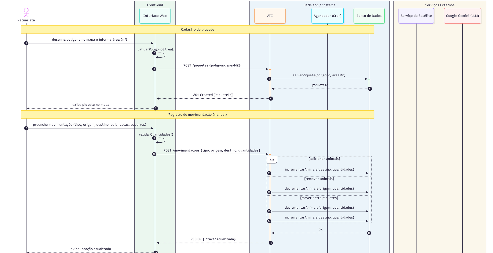
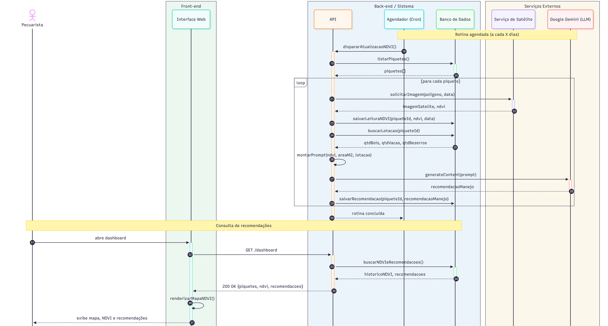

Componentes
Diagrama de Sequência · 1 de 2
Cadastro de piquete e registro de movimentação (mensagens 1 a 17)

Componentes
Diagrama de Sequência · 2 de 2
Rotina agendada de NDVI e consulta das recomendações (mensagens 18 a 37)

Diagrama de Estados
Ciclo de vida do piquete
Depois de cadastrado, o piquete fica em duas regiões ao mesmo tempo: a ocupação e o monitoramento NDVI